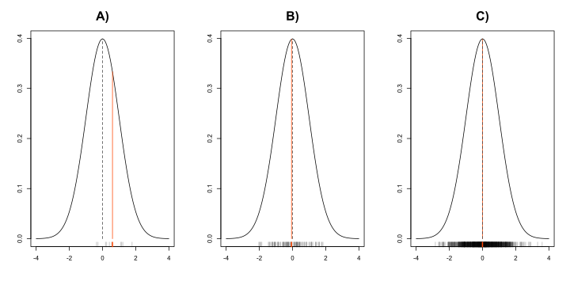

Kód
X <- data.frame()
for (i in 1:nsim) {
x <- rnorm(n)
s_unb <- 1/(n-1)
s_bia <- 1/n
s_unb2 <- 1/(n-1)
s_bia2 <- 1/n
X <- rbind(X, c(s_unb, s_bia, s_unb2, s_bia2))
}
names(X) = c('UNB', 'BIA' , 'UNB2' ,'BIA2')Obecně je odhadem v matematické statistice nazýváno určení parametru rozdělení hodnoty určitého znaku základního souboru s pomocí výběrového souboru.
Obecné charakteristiky základního souboru značíme písmeny řecké abecedy (např. \(\mu\), \(\sigma\), \(\ldots\)), pro výběrové charakteristiky volíme analogická písmena z latinky (\(\bar{x}, s_x, \ldots\)).
V mnoha situacích potřebujeme odhadnout určitý parametr (střední hodnotu, \(90\%\) kvantil atp.) neznámé náhodné veličiny. Tento parametr odhadujeme pomocí nějaké statistiky výběru z této veličiny. Například odhadujeme střední hodnotu veličiny pomocí průměru. Abychom mohli určit hodnotu parametru (např. střední hodnotu) přesně, musel by být výběr nekonečně velký. Jelikož toto v praxi nenastane, náš odhad je vždy více či méně odlišný od skutečné hodnoty parametru (např. střední hodnoty) neznámé veličiny. Důležitou vlastností odhadu je nestrannost - o nestranném odhadu mluvíme pokud střední hodnota odhadu je rovna neznámému parametru.
V přednáškách o charakteristikách náhodné veličiny a jejich odhadech je zmíněna rovnice
\[ \dfrac{\sum\limits_{i=1}^{n}(x_i - \bar{x})^2}{n-1} \]
jako nestranný odhad veličiny \(X\). Z definice rozptylu \(\mathbb{E}[(X - \mathbb{E}(X^2))]\) však vyplývá odhad
\[ \dfrac{\sum\limits_{i=1}^{n}(x_i - \bar{x})^2}{n}. \]
X <- data.frame()
for (i in 1:nsim) {
x <- rnorm(n)
s_unb <- 1/(n-1)
s_bia <- 1/n
s_unb2 <- 1/(n-1)
s_bia2 <- 1/n
X <- rbind(X, c(s_unb, s_bia, s_unb2, s_bia2))
}
names(X) = c('UNB', 'BIA' , 'UNB2' ,'BIA2')Zákon velkých čísel popisuje skutečnost, že s rostoucím počtem opakování nezávislých náhodných pokusů se empirické charakteristiky (realizované výběrové odhady), které popisují výsledky těchto pokusů blíží k teoretickým charakteristikám.
rnorm postupně \(10\), \(10^2\), \(10^3\) čísel se shodnou střední hodnotou a shodným rozptylem. Spočítejte \(\bar{x}\) a \({s^2}\), použijte nápovědu. Okomentujte výsledky.
Bodovým odhadem se se rozumí jednočíselná hodnota, která reprezentuje vybraný moment statistického souboru jako celek. Bodovým odhadem je například výběrový průměr nebo výběrový rozptyl.
set.seed(100)
x <- rnorm(10, 10, 10)
mean(x)
## [1] 9.820428
var(x)
## [1] 31.48541Takto formulovaný bodový a intervalový je jednou z nejčastěji prováděných úloh. Nejprve bodovým odhadem zjistíme výběrový průměr souboru.
mean(x)[1] 9.820428Vidíme, že \(x =\) 9.8204284. Pro tento průmer následně spočítáme interval spolehlivosti.
V případech, kdy chceme znát polohu bodového odhadu s nějakou danou pravděpodobností, můžeme se pokusit zkonstruovat tzv. intervalový odhad. Rovnice 8.1 je rovnice pro intervalový odhad střední hodnoty při neznámém rozptylu.
\[ \bar{X} \pm \dfrac{s}{\sqrt{n}}t_{1-\alpha/2}(n-1) \tag{8.1}\]
\(100(1-\alpha)\%\) interval spolehlivosti je rozmezí, ve kterém se usuzovaná hodnota základního souboru bude nacházet s určitou pravěděpodobností. Je tomu tak současně za předpokladu, že samotná poloha hledaného parametru je konstantní.
alpha <- 0.05
cbind(
mean(x) - sd(x)/length(x)*qt(p = 1 - alpha/2, df = length(x) - 1),
mean(x) + sd(x)/length(x)*qt(p = 1 - alpha/2, df = length(x) - 1)
) [,1] [,2]
[1,] 8.55109 11.08977Maximálně věrohodný odhad je takový, který maximalizuje věrohodnostní funkci \(L\) pro výběr \((x_1, x_2, \ldots, x_n)\)
\[ L(\theta, x_1, x_2, \ldots, x_n) = p(x_1, \theta) \cdot p(x_2, \theta) \cdot \ldots p(x_n, \theta) = \prod\limits_{i=1}^{n}p(x_i, \theta) \] Konstrukce věrohodnostní funkce
Vjděme z pravděpodobnostní funkce normálního rozdělení s předpisem Rovnice 8.2, který
\[ f(y|\mu, \sigma) = \dfrac{1}{\sigma\sqrt{2\pi}}\exp\left[-\dfrac{(y-\mu)^2}{2\sigma^2}\right] \tag{8.2}\]
Věrohodnostní funkce je vyjádřena:
\[ L\left(\mu, \sigma^2; x_1, \ldots, x_n\right) = (2\pi\sigma^2)^{-n/2}\exp\left(-\dfrac{1}{2\sigma^2}\sum_{j=1}^{n}(x_j-\mu)^2\right) \tag{8.3}\]
Dva parametry \(\mu\) a \(\sigma\) jsou neznámé
mu <- 5
sigma <- 1
n <- 1000
x <- rnorm(n, mu, sigma^2)
norm.lik <- function(pars, x) {
n <- length(x)
mu <- pars[1]
sigma2 <- pars[2]
logl <- -0.5 * n * log(2*pi) - 0.5 * n * log(sigma2) -
(1/(2 * sigma2))*sum((x - mu)^2)
return(-logl)
}
result <- optim(par = c(0.1, 2),
fn = norm.lik,
x = x,
method = "BFGS",
hessian = TRUE)
mle_mean <- result$par[1]
mle_sigma2 <- result$par[2]optim() hledáme maximálně věrohodný odhad. Je potřeba zadat počáteční parametry, optimalizovanou funkci, vektor měření a methodu řešení. Pokud bychom chtěli i intervalový odhad, je nutné nechat spočítat hessián, neboli determinant Hessovy matice.
MLE pro střední hodnotu: 5.0232384
MLE pro rozptyl: 1.065408.
Testování hypotéz podrobněji probereme v Kapitola 9. Nyní si nicméně ukážeme, že výstupem funkce t.test() je rovněž intervalový odhad pro střední hodnotu Normálního rozdělení při neznámém rozptylu. Testovací statistika pro oboustrannou alternativu má hodnotu
\[ \dfrac{|\bar{x} - \mu_0|}{s}\sqrt{n} > t_{\alpha/2}(n-1) \] a pro jednostrannou alternativu \(\mu > \mu_0\)
\[ \dfrac{\bar{x} - \mu_0}{s}\sqrt{n} > t_{\alpha}(n-1) \] respektive
\[ \dfrac{\bar{x} - \mu_0}{s}\sqrt{n} < t_{\alpha}(n-1) \] pro \(\mu < \mu_0\). \(n-1\) je počet stupňů volnosti.
t.test intervalový odhad pro x = rnorm(100) a set.seed(100).